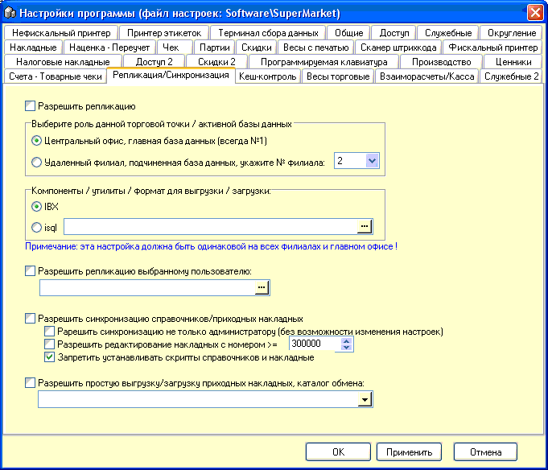

Репликация - такой
способ обмена информацией между главным офисом и торговыми точками, при
котором достигается полная идентичность всех таблиц базы данных на всех
торговых точках.
Синхронизация (приходных накладных) - несколько
упрощенный вариант пересылки на подчиненную точку только накладных на
отгружаемый товар и справочников. Более подробно смотрите в соответствующих
разделах справки, описывающих спициальные формы для Репликации и
Синхронизации.
В верхней части данного окна настроек - настройки
Репликации:
Разрешить Репликацию - главная опция - включает
соответствующее меню главной формы и возможность ПО.
Выберите роль данной торговой точки/активной базы
данных - Центральный офис или удаленный филиал и его номер. Важные настройки.
Если вы работаете в системе репликации и заново переустанавливаете
Window/SuperMarket не забудьте первым делом восстановить эти настройки! Когда
первый раз включается Репликация, то на базу данных каждой точки ставятся
соответствующие апдейты, для каждой свой.
Компоненты/утилиты/формат для выгрузки/загрузки -
IBX или isql - желательно второй вариант, как более быстрый и незаменимый при
больших объемах обмена данными. Путь указывайте в каталог
...Firebird.../bin/isql.exe. Примечание! эта настройка должна быть одинакова
везде на всех торговых точках.
Разрешить репликацию выбранному пользователю
- используется, когда нужно доверить репликацию не только администратору,
которому она доступна по умолчанию.
В нижней части данного окна настроек - настройки
Синхронизации:
Разрешить синхронизацию справочников/приходных
накладных - главная опция - включает соответствующее меню главной формы и
возможность ПО.
Разрешить синхронизацию не только
администратору (без возможности изменения настроек) - смысл ясен из названия
опции.
Разрешить редактирование накладных с
номером >=300000 - может использоваться и другой номер. Эта опция
выставляется на подчиненной точке. Позволяет создавать и редактировать только
собственные накладные, а не переданные с главной точки и имеющие меньший
номер. Чтобы все это правильно работало, при первичной настройке синхронизации
на подчиненной точке сдвигают генераторы таблиц приходных накладных, журнала
приходных накладных и таблицы партий.
Запретить устанавливать
скрипты справочников и накладные - опция "защиты от дурака" - устанавливается
на главной точке, чтобы нельзя было случайно затянуть эти документы туда,
откуда они были выгружены.
Разрешить простую выгрузку/загрузку приходных
накладных, каталог обмена: - примитивный способ сохранеия/загрузки табличной
части приходной накладной в файл. Не отслеживается целостность данных.
Используйте, если понимаете, что делаете.